화공기사(구) (2012-05-20 기출문제)
1과목: 화공열역학
1. 기상 반응계에서 평형상수 K가 다음과 같이 표시되는 경우는? (단, vi는 성분 I의 양론계수이고,
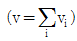
이다.)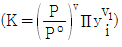
- 평형혼합물이 이상기체이다.
- 평형혼합물이 이상용액이다.
- 반응에 따른 몰수 변화가 없다.
- 반응열이 온도에 관계없이 일정하다.
(정답률: 68%)

2. 혼합물 중 성분 i의 화학포텐셜 μi에 관한 식으로 옳은 것은? (단, G는 깁스 자유에너지, ni는 성분 I의 몰수, nj는 I번째 성분 이외의 몰수를 나타낸다.)
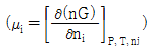
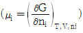
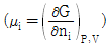
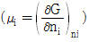
(정답률: 81%)
3. 매우 더운 여름날 방안을 시원하게 할 목적으로 밀폐된 방안에서 가동 중인 냉장고의 문을 열어 놓았다. 방이 완전히 단열된 공간이라고 간주할 때, 몇 시간이 지난 후 방안의 온도는 어떻게 될 것인가?
- 온도의 변화가 없다.
- 온도가 상승한다.
- 온도가 하강한다.
- 바깥의 온도에 따라서 달라진다.
(정답률: 72%)
4. 물과 수증가와 얼음이 공존하는 삼중점에서 자유도의 수는?
- 0
- 1
- 2
- 3
(정답률: 70%)
5. 오토사이클(Otto cycle)에 대한 설명으로 옳은 것은?
- 증기원동기의 이상사이클이다.
- 디젤기관의 이상사이클이다.
- 가스터빈의 이상사이클이다.
- 불꽃점화기관의 이상사이클이다.
(정답률: 66%)
6. 화학평형상수에 미치는 온도의 영향을 옳게 표현한 것은? (단, △H0는 표준반응엔탈피로서 온도에 무관하며, K0는 온도 T0에서의 평형상수, K는 온도 T에서의 평형상수이다.)
- 발열반응이면 온도증가에 따라 화학평형상수도 증가함.
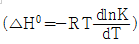
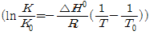
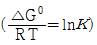
(정답률: 57%)
7. 엔탈피 H에 관한 식이 다음과 같이 표현될 때 식에 관한 설명으로 옳은 것은?
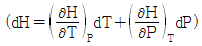
 는 P의 함수이고,
는 P의 함수이고,  는 T의 함수이다.
는 T의 함수이다. 모두 P의 함수이다.
모두 P의 함수이다. 모두 T의 함수이다.
모두 T의 함수이다. 는 T의 함수이고,
는 T의 함수이고,  는 P의 함수이다.
는 P의 함수이다.
(정답률: 70%)
8. 다음의 반응이 760℃, 1기압에서 일어난다. 반응한 CO2의 몰분율을 X라 하면 이 때의 평형상수 KP를 구하는 식은? (단, 초기에 CO2와 H2는 각각 1몰씩이며, 초기의 CO와 H2O는 없다고 가정한다.)
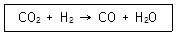
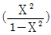
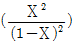
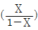
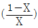
(정답률: 67%)
9. 조름 밸브(throttling valve)의 과정에서 성립하는 것은? (단, 열전달이 없고, 위치 및 운동에너지는 일정하다.)
- 엔탈피의 변화가 없다.
- 엔트로피의 변화가 없다.
- 압력의 변화가 없다.
- 내부 에너지의 변화가 없다.
(정답률: 57%)
10. 퓨개시티(Fugacity)에 관한 설명으로 틀린 것은?
- 일종의 세기(intensive properties) 성질이다.
- 이상기체 압력에 대응하는 실제기체의 상태량이다.
- 이상기체 압력에 퓨개시티 계수를 곱하면 퓨개시티가 된다.
- 퓨개시티는 압력만의 함수이다.
(정답률: 46%)
11. 활동도계수(Activity coefficient)에 관한 식으로 옳게 표시된 것은? (단, GE는 혼합물 1mol에 대한 과잉 깁스에너지이며, γi는 I성분의 활동도계수, n은 전체 몰수, ni는 I 성분의 몰수, nj는 I번째 성분 이외의 몰수를 나타낸다.)
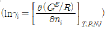
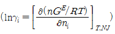
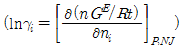
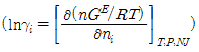
(정답률: 61%)
12. 1atm, 32℃의 공기를 0.8atm까지 가역단열 팽창시키면 온도는 약 몇 ℃가 되겠는가? (단, 비열비가 1.4인 이상기체라고 가정한다.)
- 302℃
- 13.2℃
- 23.2℃
- 33.2℃
(정답률: 70%)
13. 용매에 소량의 기체가 녹아 있을 때 나타나는 퓨개시티를 구하고자 할 경우에 가장 적절한 방법은?
- 라울의 법칙(Raoult's law)을 이용한다.
- 헨리의 법칙(Henry's law)을 이용한다.
- 네른스트(Nernst)의 분배법칙을 이용한다.
- 반데르 발스(Van der Waals)식을 이용한다.
(정답률: 55%)
14. 실린더에 피스톤이 설치되어 있다. 초기에 실린더-피스톤 내부 부피가 0.03m3일 때 14bar의 압력이 유지되도록 힘으로 유지하다가 가자기 이 힘을 반으로 줄여서 내부부피가 0.06m3로 되었다면 실린더 내의 기체가 한 일의 크기는? (단, PV=일정하다.)
- ln2×42000J
- 42000J
- ln2×84000J
- 84000J
(정답률: 44%)
15. 진공용기내에서 CaCO3(S)의 일부가 분해되어 CaO(S)와 CO2(g)가 생성된 후 평형에 도달 했을 때 자유도는?
- 0
- 1
- 2
- 3
(정답률: 41%)
16. 증기-압축 냉동사이클을 옳게 나타낸 것은?
- 압축기→응축기→증발기→팽창밸브→압축기
- 압축기→팽창엔진→응축기→증발기→압축기
- 압축기→증발기→응축기→팽창엔진→압축기
- 압축기→응축기→팽창밸브→증발기→압축기
(정답률: 49%)
17. 압축 또는 팽창에 대해 가장 올바르게 표현한 내용은? (단, 첨자 S는 등엔트로피를 의미한다.)
- 압축기의 효율은
 로 나타낸다.
로 나타낸다. - 노즐에서 에너지 수지식은 Ws=-△H이다.
- 터빈에서 에너지 수지식은 Ws=-∫u du이다.
- 조름공정에서 에너지 수지식은 dH=-u du 이다.
(정답률: 39%)
18. 50mol% 메탄과 50mol% n-헥산의 증기 혼합물의 제2비리 얼계수(B)는 50℃에서 -517cm3/mol이다. 같은 온도에서 메탄 25mol%, n-헥산 75mol%가 들어있는 혼합물에 대한 제2비리얼계수(B)는 약 몇 cm3/mol인가? (단, 50℃에서 메탄에 대하여 B1은 -33cm3/mol이고, n-헥산에 대하여 B2는 -1512cm3/mol이다.)
- -1530
- -1320
- -1110
- -950
(정답률: 23%)
19. 맥스웰(Maxwell)의 관계식으로 틀린 것은?
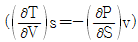
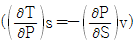
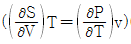
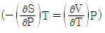
(정답률: 70%)
20. 열역학에 관한 설명으로 옳은 것은?
- 일정한 압력과 온도에서 일어나는 모든 비가역과정은 깁스(Gibbs)에너지를 증가시키는 방향으로 진행한다.
- 공비물의 공비조성에서는 끓는 액체에서 같은 조성을 갖는 기체가 만들어지며 액체의 조성은 증발하면서도 변화하지 않는다.
- 압력이 일정한 단일상의 PVT 계에서
 이다.
이다. - 화학반응이 일어나면 생성물의 에너지는 구성 원자들의 물리적 배열의 차이에만 의존하여 변한다.
(정답률: 66%)
2과목: 단위조작 및 화학공업양론
21. 세기 성질(intensive property)이 아닌 것은?
- 엔트로피
- 온도
- 압력
- 화학포텐셜
(정답률: 40%)
22. 탄소 3g이 산소 16g 중에서 완전 연소되었다며 연소 후 혼합기체의 부피는 표준 상태를 기준으로 몇 L인가?
- 5.6
- 11.2
- 16.8
- 22.4
(정답률: 45%)
23. 벤젠의 비중은 0.872, 디틀로로에탄의 비중은 1.246 이라고 할 때 벤젠 200mol%, 디클로로에탄 80mol% 용액을 만들려면 벤젠 대 디클로로에탄의 용적비는?
- 1:1.54
- 1:2.00
- 1:3.55
- 1:4.62
(정답률: 40%)
24. 질소와 수소의 혼합물이 1000기압을 유지하고 있다. 질소의 분압이 450 기압이라면 이 혼합물의 평균 분자량은 얼마인가?
- 16.7
- 15.7
- 14.7
- 13.7
(정답률: 57%)
25. 점도 1cp는 몇 kg/ms인가?
- 0.1
- 0.01
- 0.001
- 0.0001
(정답률: 49%)
26. 수심 20m 지점의 물의 압력은 몇 kgf/cm2인가? (단, 수면에서의 압력은 1atm이다.)
- 1.033
- 2.033
- 3.033
- 4.033
(정답률: 34%)
27. 20℃, 730mmHg에서 상대습도가 75%인 공기가 있다. 공기의 mol 습도는? (단, 20℃에서 물의 증기압은 17.5mmHg이다.)
- 0.0012
- 0.0076
- 0.0183
- 0.0375
(정답률: 44%)
28. 그림과 같은 순환조직에서 A, B, C, D, E 의 각 흐름의 양을 기호로 나타내었다. 이들의 관계 중 옳은 것은? (단, 이 조직은 정상상태에서 진행되고 있다.)
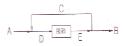
- A = B
- A + C = D + B
- D = E + C
- B = A = C
(정답률: 44%)
29. 헵탄(C7H16)을 태워 드라이아이스 CO2(S)를 제조한다. CO2 기체에서 드라이아이스의 전화율은 50%이고 시간당 드라이아이스의 제조량이 500kg 일 때 필요한 헵탄의 양은?
- 325 kg/h
- 227 kg/h
- 162 kg/h
- 143 kg/h
(정답률: 45%)
30. 건구온도와 습구온도의 상관관계에 대한 설명 중 틀린 것은?
- 공기가 건조할수록 건구온도와 습구온도차는 커진다.
- 공기가 건조할수록 건구온도가 낮아진다.
- 공기가 수증기로 포화될 때 건구온도와 습구온도는 같다.
- 공기가 습할수록 습구온도는 높아진다.
(정답률: 51%)
31. 40mol% 벤젠과 60mol% 톨루엔 혼합물을 시간당 100mol씩 증류탑에 공급한다. 탑 상부에서는 97mol%의 벤젠이 생성되고 탑하부에서는 98mol%의 톨루엔이 생성될 경우, 탑 상부의 제품유량은?
- 40 mol/h
- 50 mol/h
- 60 mol/h
- 70 mol/h
(정답률: 44%)
32. 향류다단 추출에서 추제비 4와 단수 2로 조작할 때 추진율은?
- 0.⑤
- 0.11
- 0.89
- 0.95
(정답률: 26%)
33. 열풍에 의한 건조에서 항률 건조속도에 대한 설명으로 틀린 것은?
- 총괄 열전달 계수에 비례하다.
- 열풍온도와 재료 표면온도의 차이에 비례한다.
- 재료 표면온도에서의 증발장열에 비례한다.
- 건조 면적에 반비례한다.
(정답률: 33%)
34. 파이프(pipe)와 튜브(tube)에 대한 설명 중 틀린 것은?
- 파이프의 벽두께는 schedule Number 로 표시할 수 있다.
- 튜브의 벽두께는 BWG(birmingham wire gauge) 번호로 표시할 수 있다.
- 동일한 외경에서 schedule Number 가 클수록 두껍다.
- 동일한 외경에서 BWG 가 클수록 벽두께가 두껍다.
(정답률: 46%)
35. 정류에 있어서 전 응축기를 사용할 경우 환류비를 3으로 할 때 유출되는 탑위제품 1mol/h 당 응축기에서 응축해야 할 증기량은 몇 mol/h 인가?
- 3.5
- 4
- 4.5
- 5
(정답률: 37%)
36. 열 확산계수의 차원을 옳게 나타낸 것은? (단, L은 길이, θ은 시간, T는 온도이다.)
- L2/θ
- T/θ
- 1/(LθT)
- 1/(L2θT)
(정답률: 46%)
37. "분쇄에너지는 생성입자의 입경의 평방근에 반비례한다.“ 는 법칙은?
- Sherwood 법칙
- Rittinger 법칙
- kick 법칙
- Bond 법칙
(정답률: 40%)
38. 노벽에 두께 25mm, 열전도도 0.1kcal/m·h·℃인 내화벽돌과 두게 20mm, 열전도도 0.2kcal/m·h·℃ 인 내화벽돌로 이루어졌다. 노벽의 내면 온도는 1000℃이고, 외면온도는 60℃이다. 두 내화벽돌 사이에서의 온도는 약 얼마인가?
- 228.6℃
- 328.6℃
- 428.6℃
- 528.6℃
(정답률: 28%)
39. 무차원 항이 중려과 관계있는 것은?
- 레이놀즈 (Reynolds)수
- 프루드 (Froude)수
- 프랜틀 (Prandtl)수
- 셔우드 (Sherwood)수
(정답률: 35%)
40. 충전 흡수탑내에서 탑하부로부터 도입되는 기체가 탑내의 특정 경로로만 흐르는 현상은?
- Loading
- Flooding
- Hold-up
- Channeling
(정답률: 51%)
3과목: 공정제어
41. 되먹임 제어가 가장 용이한 공정은?
- 시간지연이 큰 공정
- 역응답이 큰 공정
- 응답속도가 빠른 공정
- 비선형성이 큰 공정
(정답률: 41%)
42. 2차계 공정의 동특성을 가지는 공정에 계단입력이 가해졌을 때 응답 특성 중 맞는 것은?
- 압력의 크기가 커질수록 진동응답 즉 과소감쇠응답이 나타날 가능성이 커진다.
- 과소감쇠응답 발생 시 진동주기는 공정이득에 비례하여 커진다.
- 과소감쇠응답 발생 시 진동주기는 공정이득에 비례하여 작아진다.
- 출력의 진동 발생여부는 감쇠계수 값에 의하여 결정된다.
(정답률: 32%)
43. Underdamped 2차 공정에 관한 설명으로 옳은 것은?
- 한 개의 극이 복소수, 다른 한 극이 음의 실수를 갖는 경우도 Underdamped 2차 공정이 된다.
- 계단응답에서 overshoot은 decay ratio의 제곱이다.
- 항상 공진주파수가 존재한다.
- Damping coefficient 가 작을수록 진동이 심해진다.
(정답률: 37%)
44. 자동제어에 쓰이는 제어기의 기본형이 아닌 것은?
- 비례 - 미분
- 비례 - 적분
- 적분 - 미분
- 비례 - 적분 - 미분
(정답률: 52%)
45. PID 제어기의 비례 및 적분동작에 의한 제어기 출력 특성 중 옳은 것은?
- 비례동작은 오차가 일정하게 유지되면 출력값이 0 이 된다.
- 적분동작은 오차가 일정하게 유지되면 출력값도 일정하게 유지된다.
- 비례동작은 오차가 없어져야 출력값이 일정하게 유지된다.
- 적분동작은 오차가 없어져야 출력값이 일정하게 유지된다.
(정답률: 31%)
46. 모델식이 다음과 같은 공정의 Laplace 전달함수로 옳은 것은? (단, y는 출력변수, x는 입력변수이며 Y(s)와 X(s)는 각각 y와 x의 Laplace 변환이다.)
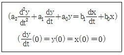
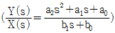
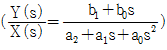
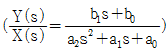
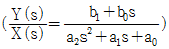
(정답률: 50%)
47. 어느 계의 단위충격(impulse)입력에 대한 y(t)가 다음과 같을 때 이 계의 전달함수는?
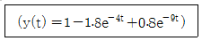
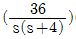
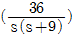
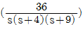
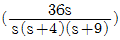
(정답률: 53%)
48. 다음 블록선도의 제어계에서 출력 C를 구하면?
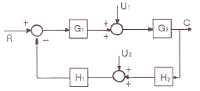
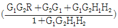
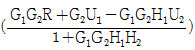
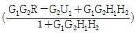
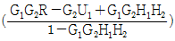
(정답률: 41%)
49. 다음 보드(bode)선도에서 위상각여유(Phase margin)는 몇 도인가?
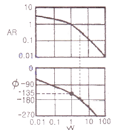
- 30°
- 45°
- 90°
- 135°
(정답률: 50%)
50. 제어계의 피제어 변수의 목표치를 나타내는 말은?
- 부하(load)
- 골(goal)
- 설정치(set point)
- 오차(error)
(정답률: 50%)
51.
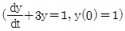
에서 라플라스 변환 Y(s)는 어떻게 주어지는가?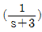
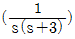
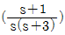
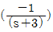
(정답률: 49%)
52. 다음의 전달함수를 가지는 “계”에 각각 unit step input 이 주어지는 경우 초기 응답이 가장 빠른 것은?
- 하나의 1차계
 가 독립으로 존재하는 경우
가 독립으로 존재하는 경우 - ζ=1 인 2차계

- 동일한 1차계
 가 상호작용을 가지며 직렬 연결된 계
가 상호작용을 가지며 직렬 연결된 계 - ζ>1 인 2차계

(정답률: 32%)
53. 다음 중 안정한 공정을 보여주는 페루프 특성방식은?
- s4+5s3+s+1
- s3+6s2+11s+10
- 3s3+5s2+s-1
- s3+16s2+5s+170
(정답률: 41%)
54.
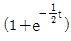
식을 라플라스 변환을 하면?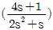
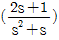
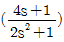
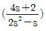
(정답률: 50%)
55. 다음의 공정 중 임펄스 입력이 가해졌을 때 진동특성을 가지며 불안정한 출력을 가지는 것은?
(정답률: 34%)
56. 전달함수 에서 a 값에 따라 나타나는 현상에 대한 설명 중 옳은 것은?
- 공정입력으로 sin 파를 넣을 때 a가 증가할수록 공정 출력의 sin 파는 상지연 (phase lag)이 더 많이 된다.
- 공정입력으로 sin 파를 넣을 때 a가 증가할수록 공정 출력의 sin 파는 진폭이 커진다.
- a가 음수이면 공정이 불안해져 공정출력이 발산한다.
- a가 양수이면 공정이 불안해져 공정출력이 발산한다.
(정답률: 33%)
57. 공정 Y(s)=G(s)X(s)의 압력 x(t)에 다음의 펄스를 넣었을 때는 출력 y(t)를 기록하였다. 출력의 빗금친 면적이 5로 계산되었다면 이 공정의 정상상태 이득은?
- 0.5
- 1
- 1.25
- 5
(정답률: 27%)
58. 앞먹임 제어에서 사용되는 측정 변수는?
- 공정 상태 변수
- 출력 변수
- 입력 조작 변수
- 측정 가능한 외란
(정답률: 53%)
59. PID 제어기를 이용한 설정치 변화에 대한 제어의 설명 중 옳지 않은 것은?
- 일반적으로 비례이득을 증가시키고 적분시간의 역수를 증가시키면 응답이 빨라진다.
- P제어기를 이용하면 모든 공정에 대해 항상 정상상태 잔류오차(steady-state offset)가 생긴다.
- 시간지연이 없는 1차 공정에 대해서는 비례이득을 매우 크게 증가시켜도 안정성에 문제가 없다.
- 일반적으로 잡음이 없는 경우 D 모드를 적절히 이용하면 응답이 빨라지고 안정성이 개선된다.
(정답률: 34%)
60. 그림의 블록선도에서 전달함수 Y(s)/R(s)를 구하면?
(정답률: 57%)
4과목: 공업화학
61. 접촉식 황산제조 시 원료가스를 충분히 정제하는 이유로 As, Se 같은 불순물이 있을 경우 바나듐 촉매보다는 백금 촉매에 더욱 두드러지게 나타나는 현상은?
- 장치부식
- 촉매독
- SO2 산화
- 미건조
(정답률: 57%)
62. 다음 반응식으로 공기를 이용한 산화반응을 하고자 한다. 공기와 NH3의 혼합가스 중 NH3 부피 백분율은?
- 44.4
- 34.4
- 24.4
- 14.4
(정답률: 47%)
63. 암모니아 합성공업에 있어서 1000℃ 이상의 고온에서 코크스에 수증기를 통할 때 주로 얻어지는 가스는?
- CO, H2
- CO2, H2
- CO, CO2
- CH4, H2
(정답률: 54%)
64. 다음 중 1차 전지가 아닌 것은?
- 수은전지
- 알칼리망건전지
- Leclanche 전지
- 니켈카드뮴전지
(정답률: 52%)
65. LPG에 대한 설명 중 옳은 것은?
- C3, C4의 탄화수소가 주성분이다.
- 액체 상태는 물보다 무겁다.
- 그 자체로 매우 심한 독한 냄새가 난다.
- 액화가 불가능하다.
(정답률: 40%)
66. 수성가스로부터 인조석유를 만드는 합성법은 무엇이라 하는가?
- Williamson법
- Kolb-Smith법
- Fischer-Tropsch법
- Hoffman법
(정답률: 55%)
67. 석회질소 제조시 촉매역할을 해서 탄화칼슘의 질소화 반응을 촉진시키는 물질은?
- CaCO2
- CaO
- CaF2
- C
(정답률: 48%)
68. 반도체공정 중 노광 후 포토레지스트로 보호되지 않는 부분을 선택적으로 제거하는 공정을 무엇이라 하는가?
- 에칭
- 조립
- 박막형성
- 리소그래피
(정답률: 56%)
69. 다음의 반응식으로 질산이 제조될 때 전체 생성물 중 질산의 질량 %는 약 얼마인가?
- 58
- 68
- 78
- 88
(정답률: 57%)
70. 이황화탄소를 알칼리셀룰로오스(Cell-ONa)에 반응시켰을 때 주생성 물질은?
- 셀룰로오스 아세테이트
- 셀룰로오스 에테르
- 셀룰로오스 알코올
- 셀룰로오스 크산테이트
(정답률: 37%)
71. 고분자 성형방법에 대한 설명으로 옳은 것은?
- 사출성형 : 고분자의 용융, 금형채움, 가압, 냉각단계로 성형하는 방법이다.
- 압축성형 : 온도를 가하여 고분자를 연화시킨 후 가열된 roller 사이를 통과시켜 성형하는 방법이다.
- 압출성형 : 성형재료를 금형의 빈 공간에 넣고 열을 가한 후 높은 압력을 가하여 성형하는 방법이다.
- 압연성형 : 플라스틱 펠릿을 용융시킨 후 높은 압력으로 용융체를 다이(die) 속으로 통과시켜 성형하는 방법이다.
(정답률: 42%)
72. 황산의 원료인 아황산가스를 황화철광(iron pyrite)을 공기로 완전 연소하여 얻고자 한다. 황화철광의 10%가 불순물 이라 할 때 황화철광 1톤을 완전연소 하는데 필요한 이론 공기량은 표준상태 기준으로 약 몇 m3인가? (단, Fe의 원자량은 56 이다.)
- 460
- 580
- 2200
- 2480
(정답률: 29%)
73. 공업적으로 수소를 제조하는 방법이 아닌 것은?
- 수성가스법
- 수증기개질법
- 부분산화법
- 공기액화분리법
(정답률: 40%)
74. 다음 중 암모니아소다법의 핵심공정 반응식을 옳게 나타낸 것은?
- 2NaCl+H2SO4→Na2SO4+2HCl
- 2NaCl+SO2+H2O+1/2O2→Na2SO4+2HCl
- NaCl+2NH3+CO2→NaCO2NH2+NH4Cl
- NaCl+NH3+CO2+H2O→NaHCO3+NH4Cl
(정답률: 50%)
75. 일산화탄소와 수소에 의한 메탄올의 공업적 제조방법에 대한 설명으로 옳은 것은?
- 압력은 낮을수록 좋다.
- ZnO-Cr2O3를 촉매로 사용할 수 있다.
- CO : H2 의 사용비율은 3 : 1 일 때가 가장 좋다.
- 생성된 메탄올의 분해반응은 불가능하다.
(정답률: 40%)
76. 오산화바나듐(V2O5) 촉매하에 벤젠을 공기 중 400℃에서 산화시켰을 때 생성물은?
- 프탈산 무수물
- 스틸벤젠 무수물
- 말레산 무수물
- 푸마트산 무수물
(정답률: 43%)
77. 산화에틸렌을 수화반응(Hydration)시켜 얻어지는 물질은?
- Ethy alcohol
- Glycerol
- Ethylene chlorohydrin
- Ethylene glycl
(정답률: 53%)
78. 수소화 정제법에 대한 설명으로 틀린 것은?
- 고온·고압 하에서 촉매를 사용한다.
- 황, 질소 및 산소 화합물 등을 제거하는 방법이다.
- 원료유를 수소와 혼합하여 이용한다.
- 환경오염 때문에 현재는 사용되지 않는다.
(정답률: 39%)
79. 인산비료에서 인 함량을 나타낼 때 그 기준은 통상 어느 것에 의하는가?
- P
- P2O3
- P2O5
- PO4
(정답률: 56%)
80. 황산제조에 사용되는 원료가 아닌 것은?
- 황화철광
- 자류철광
- 염안
- 금속제련폐가스
(정답률: 34%)
5과목: 반응공학
81. 기체-고체 반응에서 율속단계에 관한 설명으로 옳은 것은?
- 고체표면 반응단계가 항상 율속단계이다.
- 기체막에서의 물질전달 단계가 항상 율속단계이다.
- 저항이 작은 단계가 율속단계이다.
- 전체반응 속도를 지배하는 단계가 율속단계이다.
(정답률: 51%)
82. 그림과 같은 기초적 반응에 대한 농도-시간곡선을 가장 잘 표현하고 있는 반응 형태는?
(정답률: 54%)
83. 액체 A가 2A→R의 2차 반응에 따라 분해하고, 정용회분식 반응기에서 A의 50%가 5분 동안에 전화하였다면 처음부터 75% 전화율에 도달하는 데는 몇 분 걸리겠는가?
- 5
- 10
- 15
- 30
(정답률: 40%)
84. 의 기초반응식에서 반응속도식을 옳게 나타낸 것은? (단, k1은 정반응 속도상수, k2는 역반응 속도상수 이다.)
(정답률: 42%)
85. A→2R인 기체상 반응은 기초 반응(elementary reaction)이다. 이 반응이 순수한 A로 채워진 부피가 일정한 회분식(batch) 반응기에서 일어날 때 10분 반응 후 전화율이 80%이었다. 이 반응을 순수한를 사용하여, 공간시간A(space time)이 10분인 mixed flow 반응기에서 일으킬 경우 A의 전화율은 약 얼마인가?
- 91.5%
- 80.5%
- 65.5%
- 51.5%
(정답률: 32%)
86. 적당한 조건에서 A는 다음과 같이 분해되고 원료 A의 유압속도가 100L/h 일 때 R의 농도를 최대로 하는 플러그 흐름 반응기의 크기는? (단, k1=0.2/min, k2=0.2/min이고, CAO=1mol/L, CRO=CSO=0 이다.)
- 5.33L
- 6.33L
- 7.33L
- 8.33L
(정답률: 20%)
87. 속도상수에 관한 설명으로 옳지 않은 것은?
- 속도상수 k의 지수함수 항 값은 같은 온도에서 활성화 에너지가 작아질수록 커진다.
- 속도상수 k 값은 온도가 올라갈수록 커진다.
- 속도상수의 활성화에너지와 온도의존성을 제안한 사람은 Arrhenius 이다.
- 어떤 1개소의 온도에서 속도상수 k를 측정하면 활성화 에너지를 알 수 있다.
(정답률: 42%)
88. 효소반응에 의해 생체 내 단백질을 합성할 때에 대한 설명으로 틀린 것은?
- 실온에서 효소반응의 선택성은 일반적인 반응과 비교해서 높다.
- Michaelis-Menten 식이 사용될 수 있다.
- 효소반응은 시간에 대해 일정한 속도로 진행된다.
- 효소와 기질은 반응 효소-기질 복합체를 형성한다.
(정답률: 45%)
89. 반응물 A가 다음의 평행 반응으로 혼합 흐름 반응기에서 반응한다. 이 반응에서 목적하는 생성물의 순간적인 수득분율의 최대값은 얼마인가? (단, S는 목적하는 생성물, R과 T는 목적하지 않는 생성물이다.)
- 0.5
- 0.6
- 0.7
- 0.8
(정답률: 34%)
90. 액상순환반응(A→P, 1차)의 순환율이 ∞일 때 총괄 전화율은?
- 관형 흐름반응기의 전화율보다 크다.
- 완전혼합 흐름반응기의 전화율보다 크다.
- 완전혼합 흐름반응기의 전화율과 같다.
- 관형 흐름반응기의 전화율과 같다.
(정답률: 47%)
91. 정용 회분식 반응기 (batch reactor)에서 반응물A(CAO=1mol/L)가 80% 전환되는데 8분 걸렸고, 90% 전환되는데 18분이 걸렸다면 이 반응은 몇 차 반응인가?
- 0차
- 2차
- 2.5차
- 3차
(정답률: 45%)
92. 다음과 같은 기상반응이 진행되고 있다. 처음에 A만으로 반응을 시작한 경우, 부피팽창 계수 εA는 얼마인가?
- 0.25
- 0.5
- 0.75
- 1.0
(정답률: 49%)
93. 어떤 2차 반응에서 60℃의 속도상수가 1.46×10-4L/mol·s이며, 활성화에너지는 60kJ/mol 일 때 빈도계수(frequency factor)를 옳게 구한 것은?
- 1.8×105L/mol·s
- 2.8×105L/mol·s
- 3.8×105L/mol·s
- 4.8×105L/mol·s
(정답률: 30%)
94. 다음과 같은 기상반응이 30L 정용회분반응기에서 등온적으로 일어난다. 초기 A 가 30mol 이 들어있으며, 반응기는 완전 혼합된다고 할 때 1차 반응일 경우 반응기에서 A의 몰수가 0.2몰로 줄어드는데 필요한 시간은?
- 7.1min
- 8.0min
- 6.3min
- 5.8min
(정답률: 42%)
95. 연속반응 에서 Cs=CAO[1-exp(-k1t)]인 경우 반응속도상수의 관계를 가장 옳게 나타낸 것은?
- k2 >> k1
- k2 = k1
- k2 + k1 = 0
- k2<
(정답률: 31%)
96. 어떤 1차 비가역 반응의 반감기는 20분이다. 이 반응의 속도상수를 구하면 몇 min-1인가?
- 0.0347
- 0.1346
- 0.2346
- 0.3460
(정답률: 45%)
97. 직렬로 연결된 같은 크기의 혼합반응기 또는 플러그 반응기에 대한 설명 중 옳지 않은 것은?
- 반응물의 농도 증가에 따라 속도가 증가하는 반응에 대해서 플러그 반응기가 혼합반응기보다 효과적이다.
- 최종 전환율은 혼합반응기 쪽이 유리하다.
- 혼합반응기에서는 순간적으로 농도가 아주 낮은 값까지 감소한다.
- 플러그 반응기에서는 반응물의 농도가 계(係)를 통과하면서 점차 감소한다.
(정답률: 33%)
98. 다음과 같이 진행되는 반응은 어떤 반응인가?
- Non-chain reaction
- Chain reaction
- Elementary reaction
- Nonelementary reaction
(정답률: 54%)
99. 이상적 반응기 중 플러그 흐름반응기에 대한 설명으로 틀린 것은?
- 반응기 입구와 출구의 몰 속도가 같다.
- 정상상태 흐름반응기이다.
- 축방향의 농도 구배가 없다.
- 반응기내의 온도 구배가 없다.
(정답률: 37%)
100. 다음의 액상 병렬반응을 연속 흐름 반응기에서 진행시키고자 한다. 이 때 같은 입류조건에 A의 전환율이 모두 0.9가 되도록 반응기를 설계한다면 어는 반응기를 사용하는 것이 R로의 전환율을 가장 크게 해주겠는가? (단, rR=20CA 이고 이다.)
- 플러그 흐름 반응기
- 혼합 흐름 반응기
- 환류식 플러그 흐름 반응기
- 다단식 혼합 흐름 반응기
(정답률: 36%)
평형상수 K가 vi와 같은 형태로 표시되는 경우, 이는 기체 혼합물의 화학평형을 나타내는 것이다. 이 때, 이상기체의 경우 분자간 상호작용이 무시될 정도로 거의 완전한 자유 운동을 하기 때문에, 각 성분의 화학평형 상수가 부분압력의 비로 표현될 수 있다. 따라서, 이상기체의 경우 평형혼합물의 화학평형을 나타내는 평형상수 K는 부분압력의 비로 표현될 수 있으며, 이는 이상기체의 특성이다.